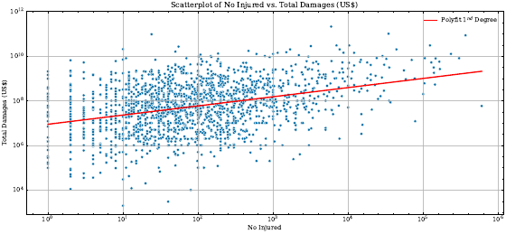
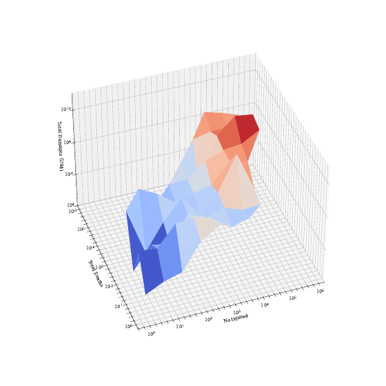
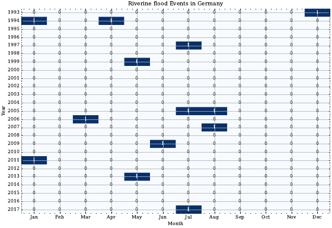
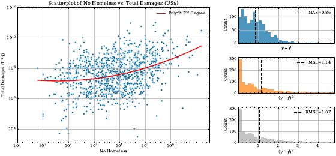
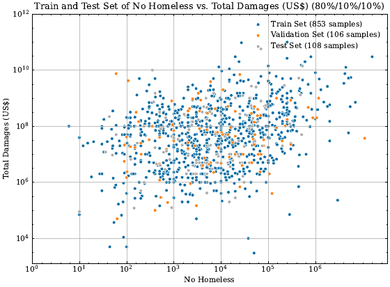
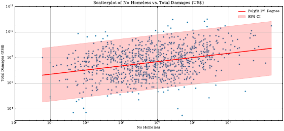

What it means to learn from data, why error splits into reducible and irreducible parts, and how flexibility trades bias against variance.
Scroll within the panel to move through the slides; scroll the page to reach the figures below. Jump by subchapter on the left.
One representative figure per topic, generated by 02_lectures_code/02.ipynb.











Statistical Learning (FIM), WI001287, TUM School of Management. Content developed by Lars Böcking.